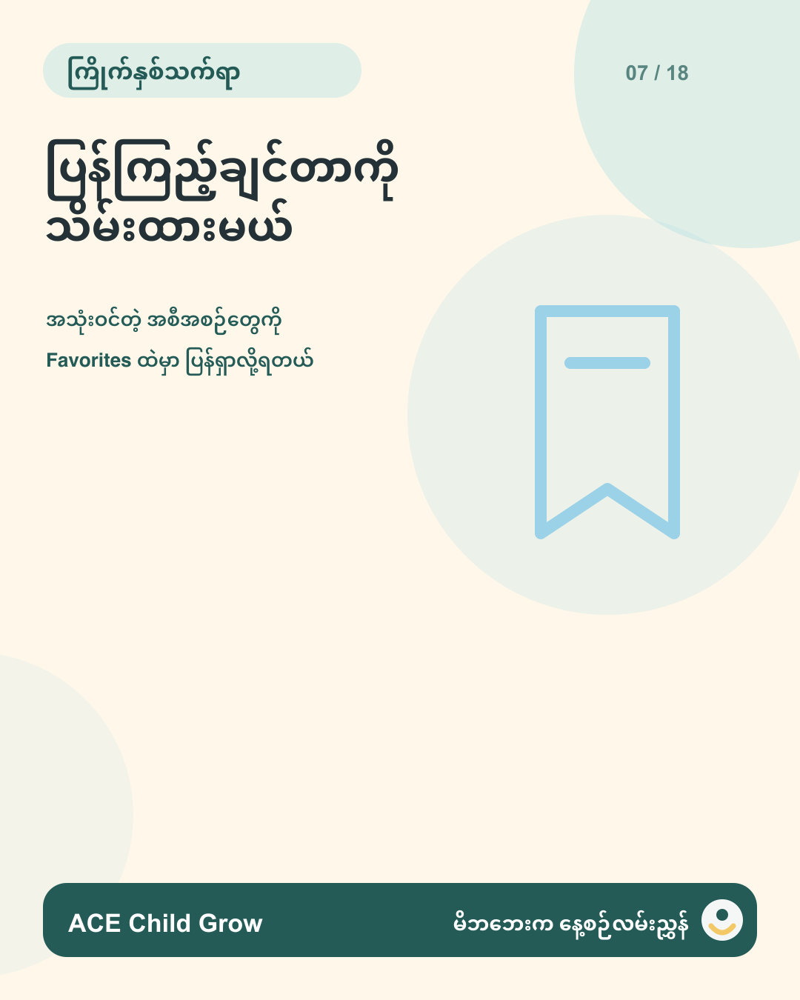

ဖတ်ပြီးတာနဲ့ ပျောက်သွားမှာစိုးရိမ်စရာ မလိုပါဘူး 💛
ACE Child Grow မှာ ပြန်ကြည့်ချင်တဲ့ လှုပ်ရှားမှုနဲ့ လေ့လာစရာတွေကို Favorites ထဲ သိမ်းထားနိုင်ပါတယ်။
ကလေးနဲ့ လုပ်ကြည့်ဖို့ အချိန်ရတဲ့အခါ အလွယ်တကူ ပြန်ဖွင့်ကြည့်ရုံပါပဲ။
#ACEChildGrow #မိဘနဲ့ကလေး #Favorites